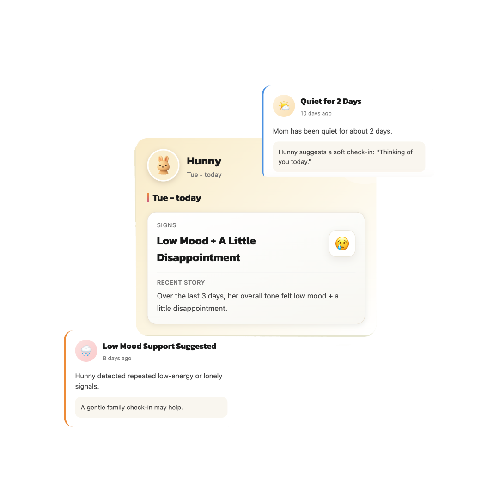

1/4
seniors are facing loneliness
Family App
Hunny quietly checks in with your loved ones through natural conversations, and tells you when something feels off.
No cameras. No tracking. Just peace of mind.
Count Down
The stakes are real
These are the moments that change outcomes. Early signals help families respond sooner.
1/4
seniors are facing loneliness
1/4
of seniors (65+) fall every year
~50%
of seniors who can’t get up within 1 hour die within 6 months
~60%
of caregivers have no tools to remotely detect early health decline
Too late
Signals are missed until a big crisis happens.
The feeling
You’re just the only one checking.

What Hunny is
It’s a daily “I’m okay” — without them needing to say it.
Friendly AI chats naturally with your loved one. No apps to learn. No effort required.
Mood, routine, responsiveness — small signals that matter.
A clear update that answers one question: “Should I be worried today?”
How it looks
“Had lunch, watched TV today”
Less active than usual
“Something feels slightly off today”
No dashboards. No guessing. Just clarity.

Why this works
People don’t want to be watched. But they’re okay with a conversation. Hunny fits into their day naturally — and turns those moments into meaningful signals for you.
We don’t ask them to do anything new. We just understand what’s already happening.
No-brainer
Easy setup
Trust
Just conversations → turned into signals.
Social proof
Real hopes from people who check in — swipe, use the arrows, or pick a dot.
Positioning
Hunny gives you early signals — before something becomes a problem.
Most people don’t realize something was wrong… until it’s too late.
Get peace of mind before you need it.
Join the waitlistFAQ
Tap a question to expand the answer. Straight talk on what Hunny is, privacy, and how to get started.
Hunny is an AI-powered companion that checks in on your loved ones through natural conversations — and turns those interactions into simple updates and alerts for you.
Instead of constant monitoring, Hunny answers one question:
“Are they okay today?”
Hunny is designed for families who care about someone but can’t always be there:
Most tools are:
Hunny is:
No.
Hunny does not use:
It only learns from natural conversations, just like texting or chatting.
No — Hunny is designed to feel like a friendly companion, not a tool.
This is critical because caregivers consistently reject tools that feel invasive or controlling.
No.
Hunny:
Only meaningful ones, like:
Not constant notifications.
You’ll just see a calm update like:
👉 “Everything looks normal today.”
Yes.
Hunny is built for care circles, so:
(This is one of the biggest unmet needs caregivers complain about.)
Yes.
You can choose:
Because caregivers today face 3 constant problems:
Hunny reduces all three.
Because:
Families want signals, not guesswork.
Most people already try:
But they’re fragmented and exhausting.
Hunny replaces all of that with one clear system.
Hunny will be a subscription-based app (family plan).
💡 Early users on the waitlist will get:
We’re currently building and testing Hunny.
👉 Join the waitlist to get early access.
Hunny is designed to:
But it is not a replacement for human care or emergency services.
That’s exactly why Hunny exists.
It’s designed to:
Because many caregivers say:
👉 “My parent won’t use tech anyway.”
Because families aren’t asking for monitoring.
They’re asking for:
And that doesn’t exist yet.
Contact Us
Get early access and Hunny updates. Add your email below — or reach us directly using the links under the form.
Email hunny.app.official@gmail.com
Instagram & Threads